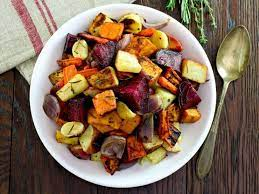

Roasted Root Vegetables

Because You Need Something Healthy!
Ingredients
- Brussels sprouts
- Sweet potatoes
- Fennel bulb
- Really, whatever is in the fridge
- Olive oil
- Maple syrup
- Thyme
- Salt
- Pepper
Steps
- Heat oven to 425F.
- Dice all the veggies up into half inch cubes.
- Toss with olive oil, maple syryp, thyme, salt and pepper.
- Spread evenly across baking sheet, making sure not to crowd.
- Bake uncovered for 25 - 30 mins.